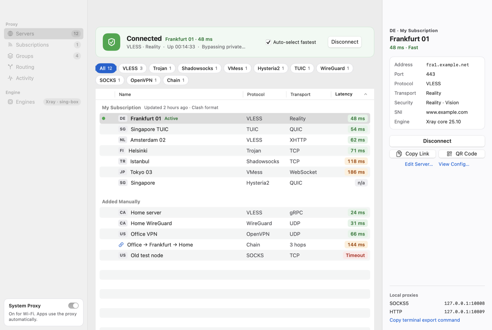
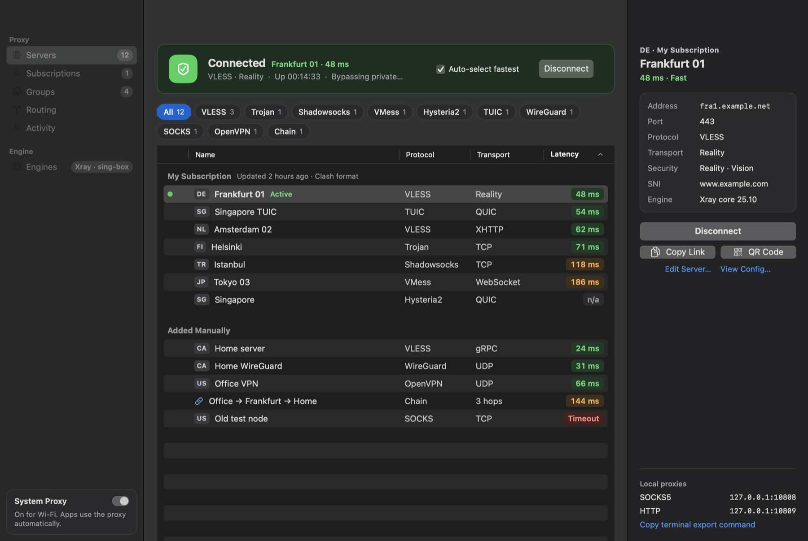
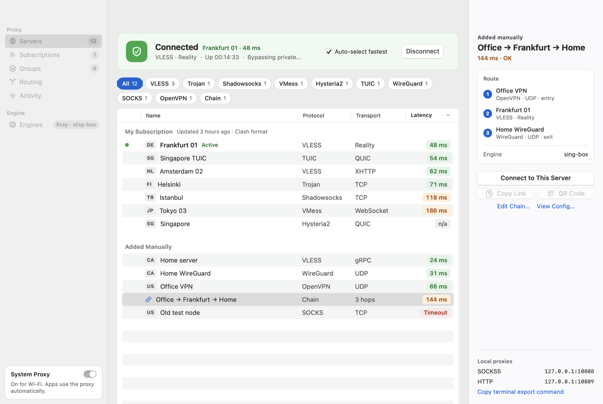
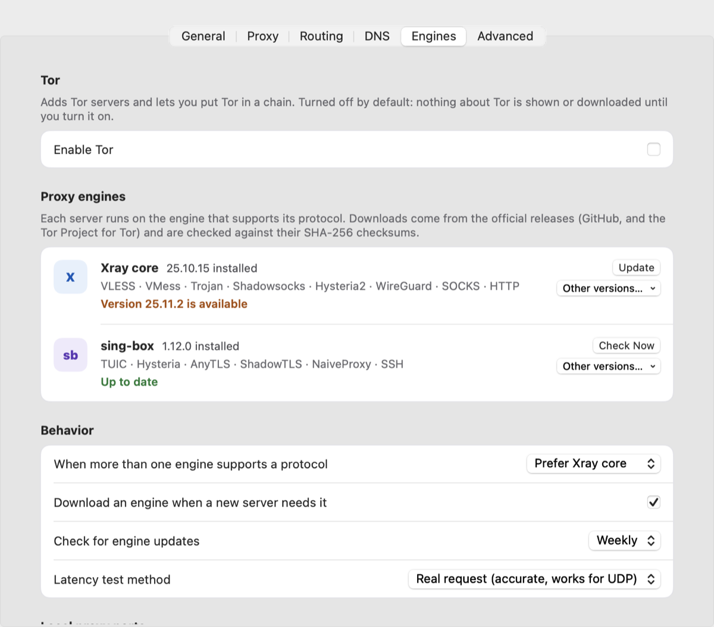
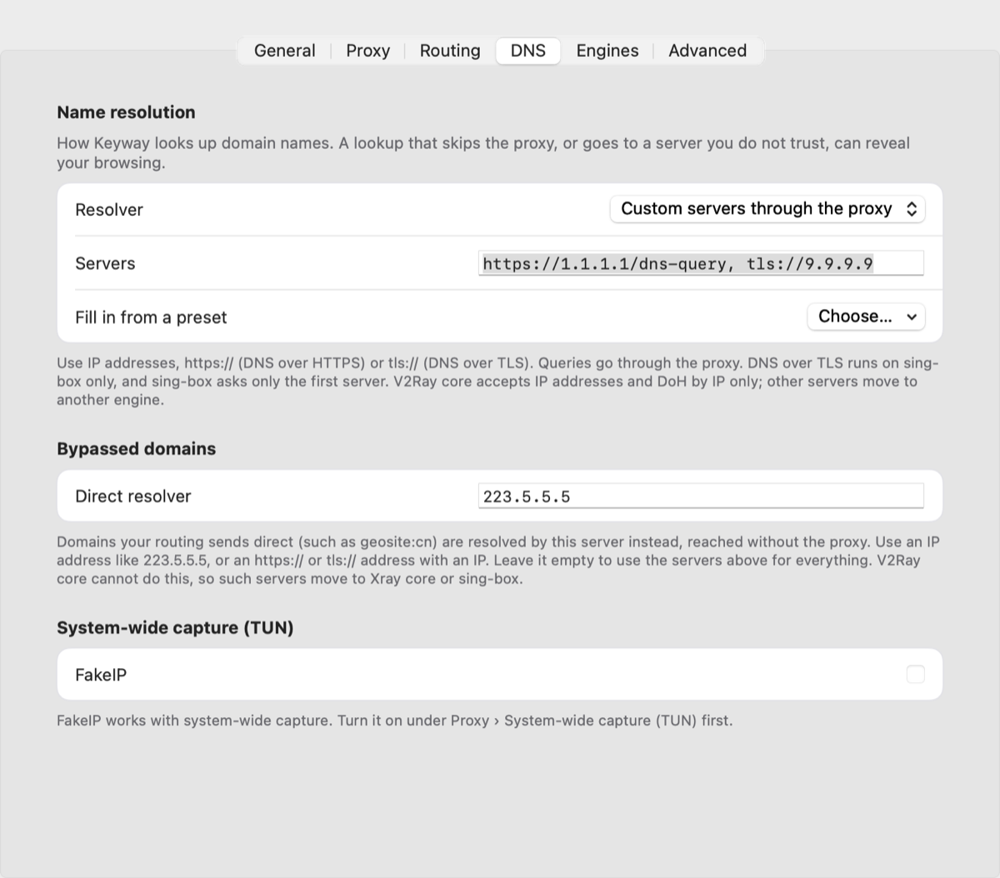
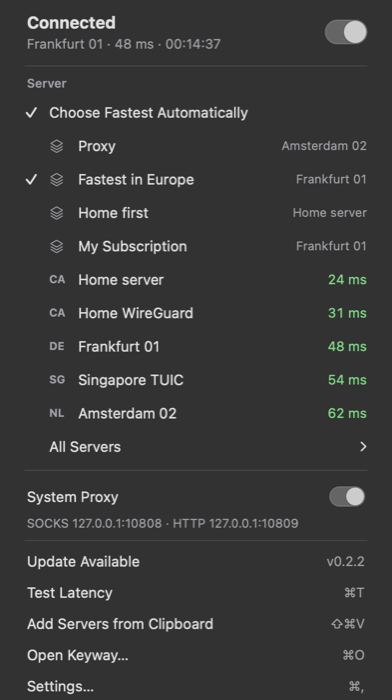

The native macOS client for Xray, sing-box, V2Ray and Tor
Import a link or subscription, chain servers together, and connect in one click. Built in SwiftUI. No Electron, no web view, no config files.


Import a link or subscription, chain servers together, and connect in one click. Built in SwiftUI. No Electron, no web view, no config files.


Keyway downloads and manages the engines, picks the right one for every server, and lets you build multi-hop proxy chains across protocols.
Route traffic through any number of servers and mix protocols, for example OpenVPN, then VLESS Reality, then WireGuard. Test Connection checks every hop before you save.
VLESS (Reality, Vision, XHTTP), VMess, Trojan, Shadowsocks, Hysteria2, TUIC, WireGuard, OpenVPN and more, each run on an engine that supports it.
Share links, subscription URLs, a QR code on your screen, WireGuard and OpenVPN files, Clash YAML and sing-box JSON.
Traffic used, quota and expiry next to each subscription, plus Manual, Fallback and Fastest groups that act as one server.
Global, bypass or your own rules, per-app rules, secure DNS, FakeIP, and TUN mode to capture all traffic over IPv4 and IPv6.
Use a Tor server on its own or as a hop in a chain, with obfs4, Snowflake and meek bridges.
Everything stays on your Mac. Keyway sends nothing except engine downloads, your subscription URLs and an optional daily update check.
Test latency through the real engine, and let auto-select pick the fastest server without flapping between similar ones.
Menu bar controls, light and dark mode, keyboard shortcuts and VoiceOver labels.




| Engine | Protocols |
|---|---|
| Xray-core | VLESS, VMess, Trojan, Shadowsocks, SOCKS5, HTTP, WireGuard, Hysteria2 |
| sing-box | Hysteria and Hysteria2, TUIC, AnyTLS, ShadowTLS, NaiveProxy, WireGuard, OpenVPN, plus the Xray protocols |
| V2Ray core (optional) | VLESS over TLS, VMess, Trojan, Shadowsocks, SOCKS5, HTTP |
| Mihomo (optional) | VLESS, VMess, Trojan, Shadowsocks, Hysteria2, TUIC, AnyTLS, WireGuard, SOCKS5, HTTP |
With Homebrew:
brew tap arminsameti/tap
brew trust arminsameti/tap
brew install --cask keywayOr download the .dmg from the latest release, drag Keyway to Applications and open it. It needs macOS 14 Sonoma or later.
Yes. It imports V2Ray and Xray links and subscriptions, and runs Xray-core, with V2Ray core as an option.
Yes. The release is a universal build for macOS 14 or later.
Yes, TUN mode. It needs administrator approval and routes every packet, IPv4 and IPv6, through the proxy.
No. It is a client. You bring your own servers or subscription.
The builds are not notarized yet. See the install section for the one-time fix.
The source is public. Engine downloads come only from official releases and are verified before install, and the local API only accepts requests carrying a per-launch token.
A kill switch, Windows and Linux support, and signed or notarized builds.